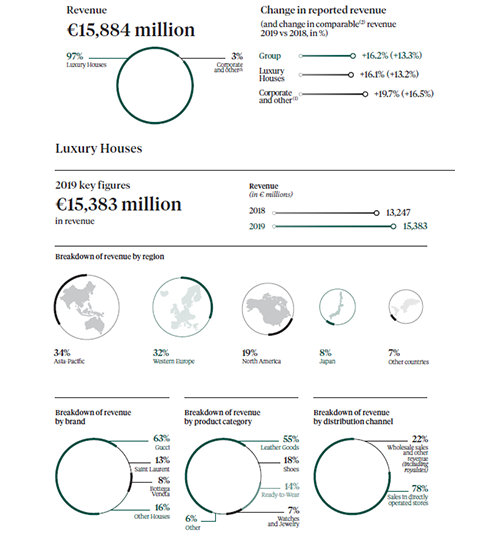
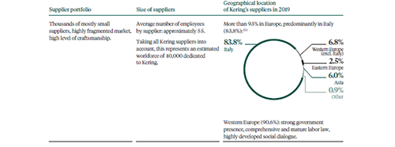
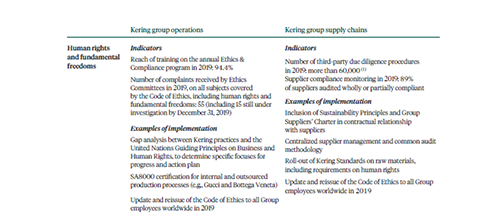

KERING GROUP MODERN SLAVERY STATEMENT 2019
THIS STATEMENT IS MADE PURSUANT TO SECTION 54 OF THE MODERN SLAVERY ACT 2015 AND CALIFORNIA TRANSPARENCY IN SUPPLY CHAINS ACT OF
2010 (SB 657). IT SETS OUT THE STEPS WHICH THE KERING GROUP AND THE COMPANIES IN THAT GROUP HAVE TAKEN DURING THE FINANCIAL YEAR 2019
TO IDENTIFY AND PREVENT MODERN SLAVERY, INCLUDING FORCED LABOUR, HUMAN TRAFFICKING AND THE WORST FORMS OF CHILD LABOUR FROM
TAKING PLACE IN OUR SUPPLY CHAINS OR IN ANY PART OF OUR BUSINESS.
IN THIS STATEMENT, THE TERM “KERING GROUP” REFERS TO KERING S.A., A FRENCH CORPORATION (“SOCIÉTÉ ANONYME”) REGISTERED WITH THE PARIS
TRADE.
THIS REPORT COVERS THE FOLLOWING KERING GROUP BRANDS: GUCCI, SAINT LAURENT, BOTTEGA VENETA, BALENCIAGA, ALEXANDER MCQUEEN,
BRIONI, BOUCHERON, POMELLATO, DODO, QEELIN, ULYSSE NARDIN, GIRARD-PERREGAUX, AND KERING EYEWEAR, NOTWITHSTANDING THAT SOME OF
THE GROUP’S BRANDS MAY ALSO ISSUE THEIR OWN MODERN SLAVERY STATEMENTS.
OUR AMBITION IS TO BE THE WORLD’S MOST INFLUENTIAL LUXURY GROUP IN TERMS OF CREATIVITY, SUSTAINABILITY AND LONG-TERM ECONOMIC
PERFORMANCE.
AS SUCH, WE ARE COMMITTED TO IMPROVING THE LABOUR STANDARDS OF THOSE WHO WORK IN OUR SUPPLY CHAINS AND BUSINESSES. THIS
INCLUDES TAKING STEPS TO BOTH IDENTIFY AND ADDRESS THE RISKS OF MODERN SLAVERY.
KERING TAKES A CROSS-FUNCTIONAL APPROACH TO GOVERNANCE OVER HUMAN RIGHTS CHALLENGES INCLUDING MODERN SLAVERY, INTEGRATED
INTO ITS OVERALL SUSTAINABLE DEVELOPMENT GOVERNANCE. SPECIFICALLY, HUMAN RIGHTS GOVERNANCE SPANS VARIOUS DEPARTMENTS, AMONG
WHICH THE HUMAN RESOURCES DEPARTMENT AND ITS DIVERSITY, INCLUSION AND TALENT UNIT, THE SUPPLY CHAIN AUDIT DEPARTMENT, THE
COMPLIANCE DEPARTMENT AND THE SECURITY DEPARTMENT. IT ALSO FALLS WITHIN THE SCOPE OF THE SUSTAINABILITY DEPARTMENT.
THIS STATEMENT WAS VALIDATED BY THE BOARD ON JUNE 16TH, THE BOARD REPRESENTING THE GROUP AND THE ENTITIES IT CONTROLS.
1 - PRESENTATION OF OUR GROUP
-
A - OUR BUSINESS

KERING GROUP WORKS WITH 38,068 EMPLOYEES WITH SUBSIDIARIES IN
OVER 40 COUNTRIES. AS A GLOBAL LUXURY GROUP, KERING MANAGES
THE DEVELOPMENT OF A SERIES OF RENOWNED HOUSES IN FASHION,
LEATHER GOODS, JEWELLERY AND WATCHES AS WELL AS KERING
EYEWEAR. OUR HOUSES DEVELOP INNOVATIVE, CREATIVE,
EXCEPTIONAL PRODUCTS, ANIMATE NETWORKS OF DIRECTLY
OPERATED STORES AND PROVIDE UNIQUE CLIENT EXPERIENCE. IN 2019,
KERING’S HOUSES OPERATE 1,381 STORES. DISTRIBUTION CHANNELS
INCLUDE RETAIL AND WHOLESALE BOTH BEING BOTH PHYSICAL AND
DIGITAL. KERING’S HOUSES ARE PRESENT ONLINE VIA E-COMMERCE
SITES, OPERATED COMPLETELY INTERNALLY IN THE CASE OF GUCCI.
THOUGH THE GROUP MAINLY RELIES ON A NETWORK OF SEVERAL
THOUSAND SUPPLIERS, IT OPERATES A GROWING NUMBER OF ATELIERS.
IN 2013, KERING ALSO BEGAN STRENGTHENING ITS UPSTREAM
POSITIONING IN THE LUXURY GOODS VALUE CHAIN, VIA THE TARGETED
ACQUISITION OF LEATHER TANNERIES TO SECURE RAW MATERIALS
SOURCING.
OUR HOUSES FOCUS ON THEIR CORE EXPERTISE AS THEY BENEFIT
FROM THE GROUP’S INTEGRATED MODEL AND CORPORATE FUNCTIONS:
THE GROUP POOLS RESOURCES AND STREAMLINES CERTAIN KEY
FUNCTIONS FOR THE HOUSES SUCH AS LOGISTICS - BOTH INTEGRATED
AND OUTSOURCED, NON-PRODUCTION PURCHASING, LEGAL AFFAIRS,
PROPERTY, ACCOUNTING, MEDIA RELATIONS, IT AND THE
DEVELOPMENT OF NEW TOOLS.
KERING OPERATES AS WELL IN THE PERFUMES & COSMETICS SEGMENT
THROUGH LICENSING AGREEMENTS BETWEEN ITS MAIN BRANDS AND
LEADING INDUSTRY PLAYERS TO DEVELOP AND SELL PERFUMES AND
COSMETICS.
KERING HAS ALSO BEEN RUNNING THE KERING FOUNDATION TO COMBAT VIOLENCE AGAINST WOMEN.
-
B - OUR SUPPLY CHAIN
KERING OPERATES IN THE LUXURY MARKET, WHOSE SUPPLY CHAINS ARE STRUCTURED IN A VERY SPECIFIC WAY, AS EVIDENCED BY THE LOCATION OF
THE SUPPLIERS IN THE CENTRALLY MANAGED DATABASE IN 2019. THE SUPPLIER BASE MANAGED BY KERING’S CENTRAL TEAM FOR ITS HOUSES HAS THE
FOLLOWING CHARACTERISTICS :
- 1. IN LINE WITH 2017 AND 2018, 2019 SAW A SHARP RISE IN THE NUMBER OF SUPPLIERS MANAGED, WITH THE INCLUSION OF ALL PRODUCTION SUPPLIERS
AND STRONG GROWTH IN THE NUMBER OF RAW MATERIALS SUPPLIERS. THE JEWELLERY AND WATCHES HOUSES ARE GRADUALLY JOINING THE
SYSTEM, AS ARE KERING EYEWEAR’S SUPPLIERS, WHICH IT BEGAN ADDING IN OCTOBER 2019;
- 2. TO DATE, IT COVERS 4,243 SUPPLIERS WITH THE FOLLOWING BREAKDOWN :
- 1. 21.5% DIRECT SUPPLIERS (A SUPPLIER IS DEEMED DIRECT WHEN IT HAS A DIRECT BUSINESS RELATIONSHIP WITH THE HOUSES RATHER THAN WORKING
VIA A SUBCONTRACTOR),
- 2. 16.7% CONTRACTORS (DIRECT SUPPLIERS WORKING FOR ONE OR MORE HOUSES AND WHICH SUBCONTRACT PART OF THEIR PRODUCTION),
- 3. 61.8% SUBCONTRACTORS (WORKING FOR CONTRACTORS AND HAVING NO DIRECT BUSINESS RELATIONSHIP WITH THE HOUSES). SUBCONTRACTING
WITHOUT PRIOR AUTHORIZATION IS NOT PERMITTED.
AMONG ITS SUPPLIERS, KERING ALSO SINGLES OUT RAW MATERIAL SUPPLIERS. THOSE IDENTIFIED AS KEY TO THE GROUP REPRESENT ROUGHLY 20% OF
ALL SUCH SUPPLIERS, CORRESPONDING TO APPROXIMATELY 80% OF PURCHASES.

OUR PRODUCTION SUPPLY CHAINS ENCOMPASS THE PRODUCTION OF
THE FOLLOWING KEY MATERIALS: HIDES AND SKINS FOR LEATHER,
PRECIOUS SKINS, FUR, CASHMERE, WOOL, SILK, COTTON, PAPER &
WOOD, PLASTICS, DOWN, CELLULOSIC FIBRES, SYNTHETIC, GOLD,
SILVER, DIAMONDS, COLOURED GEMSTONES AS WELL THE FOLLOWING
MAIN MANUFACTURING PROCESSES: TEXTILE PROCESSING, LEATHER
GOODS AND SHOES MANUFACTURING.
2 - HUMAN RIGHTS ASSESSMENT OF PRACTICES
IN 2017 KERING ANALYSED ITS PRACTICES BY COMPARING THEM TO THE UNITED NATIONS GUIDING PRINCIPLES ON BUSINESS AND HUMAN RIGHTS. THIS
ASSESSMENT ENABLED KERING TO IDENTIFY SPECIFIC POINTS FOR PROGRESS IN AREAS INCLUDING PUBLIC COMMITMENT AND POLICY, SCOPE OF
INTERNAL CONTROL PROCEDURES, GRIEVANCE AND REMEDIATION MECHANISMS, AND EXTERNAL COMMUNICATIONS. FOLLOWING ON FROM THIS
ANALYSIS, KERING TOOK STEPS TO COMPLY WITH THE REQUIREMENTS OF FRENCH 'DEVOIR DE VIGILANCE’ LEGISLATION, TO IDENTIFY RISKS AND
PREVENT SEVERE IMPACTS, INCLUDING ON HUMAN RIGHTS AND FUNDAMENTAL FREEDOMS.
KERING ALSO CARRIED OUT A DETAILED ANALYSIS OF THE RISKS THAT THE GROUP MAY FACE, INCLUDING NON-FINANCIAL RISKS. AS A RESULT OF THIS
ANALYSIS, NON-COMPLIANCE WITH INTERNATIONAL STANDARDS OR THE GROUP’S STANDARDS IN THE AREA OF RESPECT FOR HUMAN RIGHTS AND
FUNDAMENTAL FREEDOMS HAS BEEN IDENTIFIED.
IN 2020, KERING WILL BE CARRYING OUT A GROUP-WIDE HUMAN RIGHTS ASSESSMENT STUDY.
3 - OUR STANDARDS, RISK MANAGEMENT AND RELEVANT ACTIONS ON MODERN SLAVERY AND HUMAN RIGHTS
-
A - OUR STANDARDS
WE MANAGE RISKS AND IMPACTS RELATED TO MODERN SLAVERY AS PART OF OUR EXISTING PROGRAMME ON LABOUR RIGHTS, ETHICAL TRADE AND
HUMAN RIGHTS, WHICH FALLS MORE BROADLY WITHIN OUR APPROACH TO SUSTAINABILITY.
KERING HAS SIGNIFICANTLY DEVELOPED ITS SUSTAINABILITY STRATEGY OVER THE LAST 20 YEARS. IN 2017 WE PUBLISHED OUR 2025 SUSTAINABILITY
STRATEGY WHICH IS BASED ON THREE PILLARS - ENVIRONMENTAL, SOCIAL AND INNOVATION - AND WHICH SETS AMBITIOUS TARGETS FOR ALL OF THE
HOUSES WHICH ARE PART OF THE GROUP.
OUR SUSTAINABILITY PRINCIPLES ESTABLISHED FOR ALL THE LUXURY HOUSES IN 2015 SPAN THE THREE FIELDS OF HUMAN RIGHTS, LABOUR RIGHTS, AND
HEALTH AND SAFETY AMONG WHICH ELIMINATION OF CHILD LABOUR, FORCED LABOUR, AND HUMAN TRAFFICKING IN ALL ITS FORMS. THEY ARE
APPLICABLE ACROSS ALL HOUSES.
WE PUBLISHED IN 2018 OUR KERING STANDARDS FOR SOURCING AND MANUFACTURING PROCESSES. THE KEY FACTORS COVERED BY THE KERING
STANDARDS INCLUDE WORKING CONDITIONS, HUMAN RIGHTS AND FUNDAMENTAL FREEDOMS IN PRODUCTION AND EXTRACTION PROCESSES FOR
OUR MAIN RAW MATERIALS. THEY INCLUDE OUR EFFORTS TO ENSURE THAT PEOPLE WORKING IN OUR SUPPLY CHAINS ARE FREE FROM MODERN
SLAVERY.
KERING’S APPROACH TO RESPONSIBILITY WITH REGARD TO STAKEHOLDERS IS SHAPED BY THE PRINCIPLES SET OUT IN ITS CODE OF ETHICS. SINCE 2013,
THE KERING GROUP’S CODE OF ETHICS HAS INCLUDED THE GROUP SUPPLIERS’ CHARTER. FOR ANY CONTRACTOR OF KERING OR ONE OF ITS HOUSES,
COMPLIANCE WITH THE SUPPLIERS’ CHARTER IS A PRECONDITION OF THE BUSINESS RELATIONSHIP. THE SUPPLIERS’ CHARTER SPECIFIES KERING’S
EXPECTATIONS FOR ITS SUPPLIERS TO PROMOTE HUMAN RIGHTS WITHIN THEIR PRODUCTION UNITS AND AMONG THEIR SUBCONTRACTORS, AND TO
ADVISE KERING AND/OR ITS HOUSES OF ANY SERIOUS DIFFICULTIES IN APPLYING THE CHARTER. KERING AND ITS HOUSES REQUIRE THEIR SUPPLIERS TO
COMMIT TO FUNDAMENTAL PRINCIPLES AMONG WHICH: TO NOT USE CHILD LABOUR; TO PROSCRIBE THE USE OF SLAVERY OR FORCED OR
COMPULSORY LABOUR. THE SUPPLIERS’ CHARTER, AS AN INTEGRAL PART OF THE CODE OF ETHICS, WAS REVISED IN 2018 AND THE CODE OF ETHICS
WAS REISSUED TO ALL EMPLOYEES WORLDWIDE IN 2019. THE CODE OF ETHICS AND THE SUPPLIERS’ CHARTER HAVE BEEN TRANSLATED INTO THE 14
MOST WIDELY SPOKEN LANGUAGES WITHIN THE GROUP.
-
B - OUR RISK MANAGEMENT
NO CONTROL SYSTEM, REGARDLESS OF HOW MATURE AND TESTED IT IS, CAN GUARANTEE THE ABSENCE OF RISK, WHETHER THIS RELATES TO
MODERN SLAVERY OR OTHER LABOUR OR HUMAN RIGHTS ISSUES. OUR RISK MANAGEMENT IS BASED ON A CONTINUOUS IMPROVEMENT PROCESS,
TAKING INTO ACCOUNT FEEDBACKS AND GOOD PRACTICES.
KERING GROUP AND ITS HOUSES SEEK TO WORK WITH SUPPLIERS TO DEVELOP THE MOST EFFICIENT COLLABORATIVE AND CONTROL SYSTEMS IN
ORDER TO KEEP RISK TO A MINIMUM AND IMPLEMENT ANY CORRECTIVE ACTION IN CASES WHERE NON-COMPLIANCE IS IDENTIFIED. TO MEET THESE
CHALLENGES, IN 2016 KERING HAS ESTABLISHED A DEDICATED CENTRAL BODY WITHIN THE GROUP TO CONTROL THE COMPLIANCE OF GROUP
SUPPLIERS. THE PROCESS, KNOWN AS THE HERCULES SYSTEM, IS BASED ON SIX KEY PILLARS:
- 1. SUSTAINABILITY: THE SUSTAINABILITY PRINCIPLES INCLUDE MANDATORY EXPECTATIONS, DUE TO REQUIREMENTS IMPOSED BY INTERNATIONAL AND
NATIONAL LAWS, AS WELL AS KERING’S ADDITIONAL EXPECTATIONS. THEY ARE EMBEDDED IN ILO AND UNITED NATIONS CONVENTIONS, UNITED
NATIONS GUIDING PRINCIPLES ON BUSINESS AND HUMAN RIGHTS, ETC. SUPPLIERS ARE REQUIRED TO ABIDE BY THE PRINCIPLES AND SUPPLIER
COMPLIANCE IS EVALUATED ON THIS BASIS. EACH SUPPLIER IS IN TURN TASKED WITH PASSING ON THESE PRINCIPLES TO ITS OWN SUBCONTRACTOR
NETWORK, IF IT HAS ONE. ALONG WITH THE CODE OF ETHICS, INCLUDING THE SUPPLIER’S CHARTER, THE PRINCIPLES ARE EMBODIED IN THE CONTRACT
TEMPLATE. THEY ARE SYSTEMATICALLY ISSUED TO SUPPLIERS AND BOTH FORM AN INTEGRAL PART OF THEIR CONTRACTUAL RELATIONSHIP WITH
KERING;
- 2. CENTRALIZED MANAGEMENT: KERING HAS CENTRALIZED OVERSIGHT THROUGH A TEAM OF 24 PEOPLE (INCLUDING TWELVE AUDITORS SPECIALIZED
IN CONDUCTING SUPPLIER AUDITS AND MONITORING ANOMALIES); DEPENDING ON NEEDS (LOCATIONS, WORKLOAD, ETC.). THIS TEAM CAN BE
ASSISTED BY AN EXTERNAL SERVICE PROVIDER;
- 3. UNIFORM PROCEDURES: THERE ARE CLEAR AND UNIFORM PROCEDURES FOR ALL THE HOUSES, CORRESPONDING TO THE DIFFERENT STAGES OF THE
SUPPLIER RELATIONSHIP, INCLUDING THE ACTIVATION PROCEDURE, MONITORING PROCEDURE, TERMINATION OF CONTRACT PROCEDURE;
- 4. RISK-BASED AUDITING: A RISK EVALUATION USED, ON THE BASIS OF COLLECTIVE DATA TO CLASSIFY SUPPLIERS IN ACCORDANCE WITH THREE LEVELS
OF RISK (HIGH, MEDIUM OR LOW) AND TO CONSTRUCT AN AUDIT PLAN. AUDIT PLANS ARE UPDATED MONTHLY BASED ON THE NEEDS OF THE VARIOUS
HOUSES AND/OR THE OCCURRENCE OF PARTICULAR EVENTS;
- 5. STANDARDISED AUDITS: A SINGLE AND COMPREHENSIVE AUDIT METHODOLOGY WITH A QUESTIONNAIRE CONTAINING 88 QUESTIONS DIVIDED INTO
13 CATEGORIES AMONG WHICH CHILD LABOUR & FORCED LABOUR AND ALIGNED WITH THE BEST STANDARDS IN THE FIELD, IN PARTICULAR THE SA8000
AND SMETA STANDARDS. FOLLOW-UP AUDITS INCLUDE A SMALLER SCOPE FOCUS ON THE AREA(S) IN WHICH BREACHES OF COMPLIANCE WERE
IDENTIFIED OR OBSERVATIONS WERE MADE DURING THE FIRST COMPREHENSIVE AUDIT. IN ANY CASE, THE ANNOUNCED OR UNANNOUNCED AUDITS
CONSIST OF DOCUMENT REVIEWS, SITE TOURS, AND WORKERS INTERVIEWS. WORKERS ARE SELECTED TO OFFER A REPRESENTATION OF THE
WORKFORCE, NOTABLY CONCERNING AGE AND UNION AFFILIATION, IF ANY. THESE INTERVIEWS ARE CONFIDENTIAL. THE FREQUENCY OF AUDITS
DEPENDS ON THE FINDINGS OF PREVIOUS AUDITS. NEVERTHELESS, PERIODIC AUDITS WILL BE UNDERTAKEN REGULARLY TO ENSURE COMPLIANCE.
- 6. TAKING ACTION: SUPPLIER NON-COMPLIANCES ARE CLASSIFIED INTO FOUR CATEGORIES, WITH STANDARD RESPONSE FOR EACH :
- 6-1. BREACHES BY SUPPLIERS’ SUBJECT TO ZERO TOLERANCE (RELATING TO THE MOST SERIOUS SITUATIONS LIABLE TO BE ENCOUNTERED, AMONG
WHICH CHILD LABOUR AND FORCED LABOUR). IDENTIFICATION OF A ZERO-TOLERANCE BREACH TRIGGERS THE IMMEDIATE ESTABLISHMENT OF A
CRISIS UNIT BRINGING TOGETHER THE KERING AUDIT TEAM AND THE RELEVANT HOUSE(S) TO DECIDE ON THE FUTURE OF THE RELATIONSHIP WITH THE
SUPPLIER: IMMEDIATE SHUTDOWN OF THE APPROVAL PROCESS IF THE SUPPLIER IS IN THE PROCESS OF BEING ACTIVATED BUT HAS NOT STARTED
WORKING; AND DISCUSSIONS ABOUT THE POSSIBILITY OF REMEDIATION AND SUPPORT FOR THE SUPPLIER OR ABOUT THE NEED TO TERMINATE THE
CONTRACTUAL RELATIONSHIP IF THE SUPPLIER IS WORKING ON ONE OR MORE ORDERS. THE BRAND IS THE ULTIMATE DECISION-MAKER ON THE MOST
APPROPRIATE RESPONSE,
- 6-2. SERIOUS COMPLIANCE BREACHES BY SUPPLIERS. THE SUPPLIER IS GIVEN ONE MONTH TO RESOLVE THE SERIOUS BREACH OF COMPLIANCE, AND A
FOLLOW-UP AUDIT IS SCHEDULED TO CONFIRM THAT THE ISSUE HAS BEEN RESOLVED,
- 6-3. MODERATE COMPLIANCE BREACHES BY SUPPLIERS. THE SUPPLIER IS GIVEN THREE MONTHS TO RESOLVE THE MODERATE BREACH OF COMPLIANCE,
AND A FOLLOW-UP AUDIT IS SCHEDULED TO CONFIRM THAT THE ISSUE HAS BEEN RESOLVED,
- 6-4. OBSERVATIONS. THESE GIVE RISE TO A CORRECTIVE ACTION PLAN AND ARE THE SUBJECT OF A DEDICATED CHECKLIST AT THE NEXT AUDIT. THE
SUPPLIER HAS SIX MONTHS TO REMEDY THE OBSERVATION.
FOR EACH OF THE 13 CATEGORIES OF THE COMPREHENSIVE AUDIT REQUIREMENTS, A DETAILED DESCRIPTION OF WHAT CONSTITUTES ZERO-
TOLERANCE BREACHES, SERIOUS BREACHES OF COMPLIANCE, MODERATE BREACHES OF COMPLIANCE AND OBSERVATIONS HAS BEEN PREPARED.
DEPENDING ON THE RESULTS OF AUDITS, SUPPLIERS ARE CLASSIFIED AS: COMPLIANT; PARTIALLY; PROGRESS EXPECTED; ZERO TOLERANCE.
-
C - COMPLEMENTARY TOOLS AND ACTIONS
TO COMPLEMENT THE CORE HERCULES RISK MANAGEMENT SYSTEM, VARIOUS TOOLS AND ACTIONS ARE DEPLOYED.
TRAINING
ALL GROUP EMPLOYEES TAKE A COMPULSORY ANNUAL ETHICS AND COMPLIANCE COURSE BASED ON THE PRINCIPLES SET OUT IN THE KERING’S CODE
OF ETHICS.
IN 2019, KERING’S TEAMS CONTINUED THEIR WORK ON THE CIRCULATION OF THE KERING STANDARDS. EACH HOUSE HELD ONE OR MORE SESSIONS
INTERNALLY. THE KERING STANDARDS HAVE BEEN SHARED WITH ALL OF THE GROUP’S KEY SUPPLIERS. A NUMBER OF EXPLANATORY AND TRAINING
SESSIONS WERE ALSO HELD IN 2019, AS IN 2018, PARTICULARLY FOR SUPPLIERS OF THE LEATHER GOODS, FASHION AND WATCHES ACTIVITIES.
TO ROUND OUT THESE TRAINING COURSES, KERING’S SUSTAINABILITY DEPARTMENT PUT IN PLACE AN INTERNAL E- LEARNING PROGRAM PRESENTING
ALL OF THE KERING STANDARDS. THE COURSE HAS BEEN COMPLETED BY MORE THAN 4,400 GROUP EMPLOYEES TO DATE. KERING ALSO WORKED TO
ADAPT IT TO EXTERNAL AUDIENCES IN 2019, WITH A VIEW TO CIRCULATING IT MORE WIDELY AMONG SUPPLIERS. A PILOT COURSE WAS ORGANIZED
WITH AROUND TEN LEATHER SUPPLIERS IN JULY 2019, WITH A VIEW TO MUCH BROADER CIRCULATION LATER. THESE TRAINING SUPPORT CONTAIN
ELEMENTS RELATED TO HUMAN RIGHTS AND FUNDAMENTAL FREEDOMS.
WHISTLEBLOWING SYSTEM
INTRODUCED IN 2005, KERING’S WHISTLEBLOWING SYSTEM WAS STRENGTHENED IN 2018 TO ENSURE FULL COMPLIANCE WITH FRANCE’S SAPIN II LAW.
IT IS ACCESSIBLE TO ALL PEOPLE WORKING FOR THE GROUP AND EXTERNAL AND TEMPORARY PERSONNEL WORKING FOR EXTERNAL PARTNERS OR
SERVICE PROVIDERS UNDER CONTRACT WITH THE GROUP AND/OR ITS HOUSES. ALL EMPLOYEES AND DIRECT SUPPLIERS MAY USE THE SYSTEM TO
SUBMIT REPORTS. IT MAY BE USED TO REPORT ANY SUSPICION RELATED TO MODERN SLAVERY - AMONG OTHER OFFENSES OR VIOLATIONS. KERING IS
COMMITTED TO PROTECTING WHISTLEBLOWERS WHO RAISED AN ISSUE IN GOOD FAITH, AND EXPLICITLY PROHIBITS ANY FORM OF REPRISAL IN ITS
ETHICS POLICIES AND PROCEDURES.
-
D- WORKING TOGETHER
AS A MAJOR PLAYER IN THE LUXURY GOODS INDUSTRY AND AWARE OF ITS SOCIAL RESPONSIBILITY IN RESPECT OF A WIDE RANGE OF SUPPLIERS,
SUBCONTRACTORS AND RAW MATERIAL PRODUCTION CHAINS, KERING ENGAGES IN CONTINUOUS AND COLLABORATIVE DIALOGUE ON HUMAN
RIGHTS AND MODERN SLAVERY WITH KEY STAKEHOLDERS IN ITS SUPPLY CHAINS AND BEYOND. KERING IS A MEMBER OF THE FOLLOWING INITIATIVES,
GROUPS AND PROGRAMMES:
- 1. THE SUSTAINABLE APPAREL COALITION - WHICH WORKS TO REDUCE THE NEGATIVE ENVIRONMENTAL AND SOCIAL IMPACTS CAUSED BY THE
INDUSTRY WORLDWIDE;
- 2. TEXTILE EXCHANGE EUROPE - WHICH WORKS TO DRIVE SUSTAINABLE TRANSFORMATION IN THE INDUSTRY. KERING IS ACTIVELY INVOLVED IN A
NUMBER OF ITS SUB-GROUPS, INCLUDING THE RESPONSIBLE CASHMERE ROUNDTABLE, RESPONSIBLE LEATHER ROUNDTABLE, RESPONSIBLE WOOL
STANDARD, ORGANIC COTTON ROUNDTABLE AND RESPONSIBLE DOWN STANDARD;
- 3. BUSINESS FOR SOCIAL RESPONSIBILITY (BSR), ESPECIALLY ITS GLOBAL BUSINESS COALITION AGAINST HUMAN TRAFFICKING (GBCAT), FORMED BY
MAJOR PRIVATE GROUPS AND NGOS TO COMBAT MODERN SLAVERY, PRIMARILY BY DETECTING AND ERADICATING IT FROM COMPANIES’ COMPLEX
SUPPLY CHAINS;
- 4. THE MEKONG CLUB, WHICH TACKLES PROBLEMS OF MODERN SLAVERY ;
- 5. A NETWORK SET UP BY UNICEF AND NORGES BANK INVESTMENT MANAGEMENT ON CHILDREN’S RIGHTS IN THE TEXTILE AND FOOTWEAR SECTOR;
- 6. PLEDGE AGAINST FORCED CHILD LABOUR IN UZBEKISTAN COTTON OF WHICH KERING IS A SIGNATORY;
- 7. THE OECD CONSULTATIVE GROUP ON DUE DILIGENCE FOR THE GARMENT AND FOOTWEAR SECTORS AS PART OF THE SECTOR-BY-SECTOR ROLL-OUT
OF THE OECD’S GUIDELINES FOR MULTINATIONAL ENTERPRISES;
- 8. THE SOCIAL & LABOUR CONVERGENCE PROJECT, A JOINT INITIATIVE FROM THE SUSTAINABLE APPAREL COALITION AND THE SOCIAL & LABOUR
CONVERGENCE ON A COMMON SOCIAL EVALUATION FRAMEWORK FOR SUPPLY CHAINS.
4 - OUTCOMES AND KPIS
WITHIN THE PORTFOLIO OF SUPPLIERS PRESENTED IN SECTION 3.B, 3,441 AUDITS WERE CONDUCTED IN 2019 (AN INCREASE OF 20% COMPARED WITH
2018), BREAKING DOWN AS 1,840 COMPREHENSIVE AUDITS AND 1,601 FOLLOW -UP AUDITS. A TOTAL OF 39.3% OF THESE AUDITS WERE CARRIED OUT BY
KERING’S SUPPLY CHAIN AUDIT TEAM, AND 60.7% BY EXTERNAL AUDITORS, WITH THE GROUP AUDIT PROTOCOL APPLIED IN THE SAME WAY FOR ALL
AUDITS CONDUCTED. THIS MEANS THAT 56% OF SUPPLIERS WERE AUDITED IN 2019. OVER THE 2015 - 2019 PERIOD, 83% OF SUPPLIERS WERE AUDITED.
MOREOVER, KERING HAS UNDERTAKEN TO AUDIT ALL OF ITS KEY SUPPLIERS EVERY TWO YEARS. IT SHOULD BE NOTED THAT “ACTIVATION” AUDITS FOR
NEW SUPPLIERS ARE COMPREHENSIVE AUDITS, AND THAT THEY THEREFORE COVER THE ENTIRE SCOPE OF A COMPREHENSIVE AUDIT.
FOLLOWING THESE AUDITS, 58.9% OF SUPPLIERS WERE RATED COMPLIANT, 30.1% PARTIALLY COMPLIANT, 10.3% PROGRESS EXPECTED AND 0.7% ZERO
TOLERANCE. A TOTAL OF 68 SUPPLIERS SAW THEIR BUSINESS RELATIONSHIP TERMINATED IN 2019 DUE TO UNSATISFACTORY AUDIT RESULTS. ROBUST
CORRECTIVE ACTION PLANS WERE PUT TOGETHER FOLLOWING THE AUDITS, WHEREVER BREACHES OF COMPLIANCE, AND PARTICULARLY SERIOUS
BREACHES, WERE IDENTIFIED. FOLLOW-UP AUDITS WERE THEN CONDUCTED TO VERIFY THE RESOLUTION OF THE PROBLEM. THE ZERO-TOLERANCE
BREACHES IDENTIFIED DURING THE AUDITS WERE DEALT WITH IMMEDIATELY, IN ACCORDANCE WITH ESTABLISHED RULES AND IN COORDINATION WITH
THE RELEVANT HOUSES. TO SPEED UP THE RESOLUTION OF ISSUES, THE CENTRAL TEAM HELD MORE THAN 220 COMMITTEE MEETINGS WITH THE
HOUSES IN 2019, WHICH EFFECTIVELY RESULTED IN THE RESOLUTION OF A LARGE NUMBER OF ANOMALIES.

1 - GEOGRAPHICAL BREAKDOWN IN 2019 OF DIRECT SUPPLIERS AND
CONTRACTORS, MANAGED WITHIN THE CENTRALIZED SYSTEM
INTRODUCED BY KERING IN 2016.
2 - THIRD - PARTY DUE DILIGENCE PROCEDURES UNDERTAKEN UNDER
THE PROCEDURE SPECIFIED BY THE GROUP’S ANTI - CORRUPTION
POLICY AND INCLUDING SUPPLIERS, SUBCONTRACTORS AND OTHER
CURRENT OR POTENTIAL BUSINESS PARTNERS (RETAILERS, SERVICE
PROVIDERS, CUSTOMERS, ETC.), ALONG WITH RELATED PARTIES